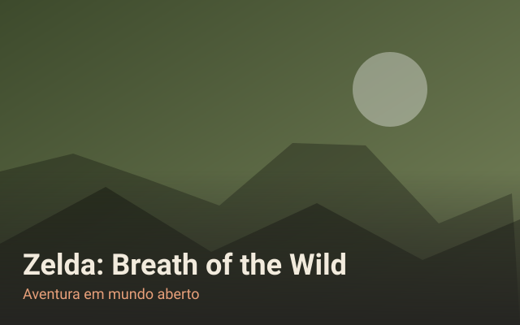

The Legend of Zelda: Breath of the Wild
9,7Hyrule funciona como um grande quebra-cabeça de física e sistemas. Escalar qualquer montanha, planar ou combinar elementos recompensa a curiosidade, e o jogo quase nunca segura a mão do jogador. A sensação de descoberta é constante.
Pontos positivos
- Mundo aberto livre e cheio de descobertas
- Física e elementos geram soluções criativas
- Trilha sonora discreta que valoriza a exploração
Pontos negativos
- Armas quebram com frequência
- História contada de forma pouco direta
- Taxa de quadros oscila em áreas mais pesadas
Recomendado para
ExploradoresFãs de quebra-cabeçasIniciantes em mundo aberto
Pode não agradar
Quem prefere roteiro linear e guiado